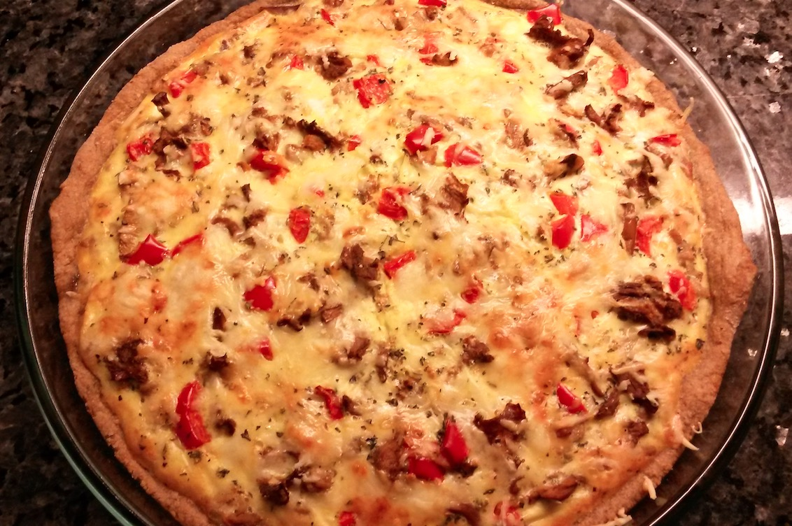

Suolaiset Herkut

Nachot
400g tortillasipsejä, 450g maustamatonta kanaa, 1 Fajita mausteseos, 1 punasipuli, 175g cheddar juustoraastetta, salsakastiketta, 4 avokadoa, 1 cuacamole-mausteseos, tuoretta korianteria
Paista ja mausta kana. Levitä tortillasipsit pellille, levitä niiden päälle kanasuikaleet, silputtu punasipuli ja juustoraaste. Paista uunissa 180 C n. 15min.
Kuori 3 avokadoa, murskaa ne kulhossa ja sekoita joukkoon cuacamole-mauste. Ripottele nachojen päälle salsakastiketta , cuacamolea. Koristele tuoreella korianterilla ja avokado viipaleilla.
400g tortillasipsejä, 450g maustamatonta kanaa, 1 Fajita mausteseos, 1 punasipuli, 175g cheddar juustoraastetta, salsakastiketta, 4 avokadoa, 1 cuacamole-mausteseos, tuoretta korianteria
Paista ja mausta kana. Levitä tortillasipsit pellille, levitä niiden päälle kanasuikaleet, silputtu punasipuli ja juustoraaste. Paista uunissa 180 C n. 15min.
Kuori 3 avokadoa, murskaa ne kulhossa ja sekoita joukkoon cuacamole-mauste. Ripottele nachojen päälle salsakastiketta , cuacamolea. Koristele tuoreella korianterilla ja avokado viipaleilla.

Jauheliha-paprikapiirakka
Pohja: 150g voita tai margariinia, 1 dl (65g) perunasosejauhetta, 1 ½ dl vehnäjauhoja, 1 rkl kylmää vettä, (Pohjan sijasta voi kayttää myös kaupan valmispohjia, esim. ruisperunapiirakkapohja on hyvä.)
Nypi kulhossa nopeasti kylmä rasva, perunasosejauhe ja vehnäjauhot. Lisää vesi ja sekoita kunnes taikina on tasaista. Painele taikina piirakkavuoan (24cm) pohjalle ja reunoille.
Täyte: 400g jauhelihaa, 1 paprika, 2,5 dl ruokakermaa, 2 kananmunaa, 1 ½ tl Välimeren yrtit –maustetta, 1 tl mustapippuria, 1 ps Emmental –juustoraastetta
Paista jauheliha ja pilko paprika kuutioiksi. Sekoita kulhossa kerma ja kananmunat. Lisää joukkoon puolet juustoraasteesta. Levitä piirakkapohjalle jauheliha ja paprikakuutiot. Kaada päälle muna-kerma-juustoseos ja ripottele mausteet päälle. Levitä loput juustoraasteesta päälle. Paista uunissa 175 C alatasolla n. 45 min.
Pohja: 150g voita tai margariinia, 1 dl (65g) perunasosejauhetta, 1 ½ dl vehnäjauhoja, 1 rkl kylmää vettä, (Pohjan sijasta voi kayttää myös kaupan valmispohjia, esim. ruisperunapiirakkapohja on hyvä.)
Nypi kulhossa nopeasti kylmä rasva, perunasosejauhe ja vehnäjauhot. Lisää vesi ja sekoita kunnes taikina on tasaista. Painele taikina piirakkavuoan (24cm) pohjalle ja reunoille.
Täyte: 400g jauhelihaa, 1 paprika, 2,5 dl ruokakermaa, 2 kananmunaa, 1 ½ tl Välimeren yrtit –maustetta, 1 tl mustapippuria, 1 ps Emmental –juustoraastetta
Paista jauheliha ja pilko paprika kuutioiksi. Sekoita kulhossa kerma ja kananmunat. Lisää joukkoon puolet juustoraasteesta. Levitä piirakkapohjalle jauheliha ja paprikakuutiot. Kaada päälle muna-kerma-juustoseos ja ripottele mausteet päälle. Levitä loput juustoraasteesta päälle. Paista uunissa 175 C alatasolla n. 45 min.

Kinkku voileipäkakku (2 suurta kakkua).
2 tummaa vuokaleipää 2 vaaleaa (ruisvehnä) vuokaleipää.
Täyte 1: 700g kinkkua, 2 prk ananasmurskaa, 1 prk kermaviiliä, 1 prk ranskankermaa, sinappia
Täyte 2: 5 prk tuorekurkkusalaattia
Täyte 3: 700g kinkkua, 3 prk (600g) Creme Bonjour Aurinkokuivattutomaatti-tuorejuustoa, 4-5 tomaattia, Välimeren yrtit –maustetta
Kostutus: Kasvislientä
Kuorrutus: 800g tuorejuustoa (yrtti), 1 prk ranskankermaa
Koristeluun: jääsalaattia, minitomaatteja, persiljaa, kurkkua, kinkkua
2 tummaa vuokaleipää 2 vaaleaa (ruisvehnä) vuokaleipää.
Täyte 1: 700g kinkkua, 2 prk ananasmurskaa, 1 prk kermaviiliä, 1 prk ranskankermaa, sinappia
Täyte 2: 5 prk tuorekurkkusalaattia
Täyte 3: 700g kinkkua, 3 prk (600g) Creme Bonjour Aurinkokuivattutomaatti-tuorejuustoa, 4-5 tomaattia, Välimeren yrtit –maustetta
Kostutus: Kasvislientä
Kuorrutus: 800g tuorejuustoa (yrtti), 1 prk ranskankermaa
Koristeluun: jääsalaattia, minitomaatteja, persiljaa, kurkkua, kinkkua

Italiansalaatti
5 omenaa, 1 kpl (450g) HK lauantaimakkara tanko, 4 keskikokoista perunaa, 1 ps pakasteherneitä, 1 ps pakastemaissia, 4 keskikokoista porkkanaa pilkottuna ja keitettynä, 1 ps (400g) makaroneja keitettynä, 3 kpl Kruunu majoneesia, 6 suolakurkkua
Pilko kaikki aineet pieniksi kuutioiksi astiaan ja sekoita majoneesi joukkoon. Anna jäähtyä jääkaapissa ainakin 4 tuntia ennen tarjoilua.
5 omenaa, 1 kpl (450g) HK lauantaimakkara tanko, 4 keskikokoista perunaa, 1 ps pakasteherneitä, 1 ps pakastemaissia, 4 keskikokoista porkkanaa pilkottuna ja keitettynä, 1 ps (400g) makaroneja keitettynä, 3 kpl Kruunu majoneesia, 6 suolakurkkua
Pilko kaikki aineet pieniksi kuutioiksi astiaan ja sekoita majoneesi joukkoon. Anna jäähtyä jääkaapissa ainakin 4 tuntia ennen tarjoilua.